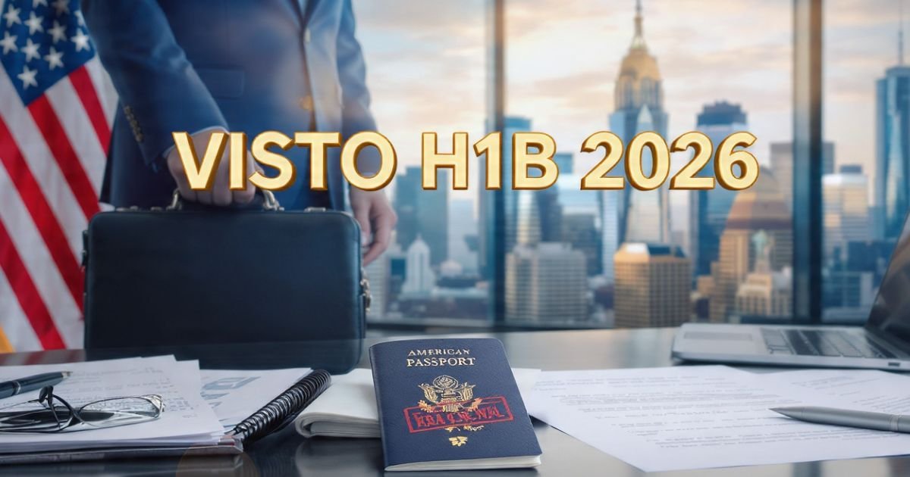

Visto de Trabalho H1B 2026: guia completo para trabalhar nos Estados Unidos
Introdução: o sonho de trabalhar nos Estados Unidos
Trabalhar nos Estados Unidos é o sonho de milhões de profissionais ao redor do mundo. Com uma economia vibrante, oportunidades em áreas como tecnologia, engenharia, medicina e finanças, e um mercado de trabalho altamente competitivo, os EUA atraem talentos de todos os cantos do planeta. No entanto, para que um profissional estrangeiro possa trabalhar legalmente no país, é necessário obter o visto de trabalho H1B — um dos vistos mais disputados e cobiçados do mundo.
Em 2026, o processo de solicitação do visto H1B continua sendo desafiador, com um sistema de loteria que limita o número de vistos emitidos anualmente. A demanda é altíssima, e a concorrência é intensa. No entanto, com as informações corretas, uma preparação adequada e o apoio de uma empresa patrocinadora, é possível aumentar significativamente as chances de sucesso.
Neste guia completo sobre o visto H1B, você vai encontrar tudo o que precisa saber para entender o processo: o que é o visto H1B, quem pode solicitar, os requisitos básicos, a documentação necessária, o passo a passo da solicitação, como funciona a loteria, dicas para a entrevista, os valores atualizados e respostas para as principais dúvidas dos profissionais brasileiros.
Nosso objetivo é desmistificar o processo e mostrar que, com organização e as informações corretas, obter o visto H1B é perfeitamente possível. Afinal, o sonho de trabalhar nos Estados Unidos começa com o primeiro passo — e esse passo é o visto.

O visto H1B é o documento essencial para trabalhar legalmente nos Estados Unidos
O que é o visto H1B
O visto H1B é uma categoria de visto de não-imigrante que permite que profissionais estrangeiros trabalhem temporariamente nos Estados Unidos em ocupações especializadas. O visto é emitido pelo governo americano e permite que o profissional exerça sua atividade profissional em uma empresa patrocinadora nos EUA.
Características principais do visto H1B:
- Trabalho especializado: Permite que o profissional exerça uma ocupação que exige conhecimento teórico e prático em uma área específica (tecnologia, engenharia, medicina, finanças, ciências, etc.).
- Duração: Válido por 3 anos, com possibilidade de extensão por mais 3 anos (total de 6 anos).
- Dependência do empregador: O visto H1B está vinculado ao empregador que patrocina a solicitação. O profissional só pode trabalhar para o empregador que o patrocinou, a menos que solicite uma transferência.
- Dependentes: Cônjuges e filhos menores de 21 anos podem obter o visto H4 para acompanhar o trabalhador.
- Green Card: O visto H1B pode ser um caminho para o Green Card (residência permanente) nos EUA.
Visto H1B vs. Outros vistos de trabalho: É importante não confundir o visto H1B com outras categorias. O L1 é para transferência de funcionários de empresas multinacionais, o E1/E2 é para investidores e o O1 é para pessoas com habilidades extraordinárias.
Quem pode solicitar o visto H1B
O visto H1B é uma categoria de visto de trabalho que exige que o solicitante atenda a critérios específicos. Entenda quem pode solicitar:
Profissionais de áreas especializadas: O visto H1B é destinado a profissionais com formação superior (bacharelado ou equivalente) e conhecimento especializado em áreas como tecnologia da informação, engenharia, ciências, medicina, finanças, arquitetura, marketing, etc.
Ocupações que exigem conhecimento teórico: A ocupação deve exigir, no mínimo, um bacharelado (ou equivalente) para o desempenho da função.
Oferta de trabalho de uma empresa americana: O profissional deve ter uma oferta de trabalho de uma empresa americana que esteja disposta a patrocinar o visto H1B. A empresa é responsável por iniciar o processo.
Não é para todos os profissionais: O visto H1B não é para profissionais de áreas como comércio, administração geral, vendas, etc., a menos que a ocupação exija conhecimento especializado.
Limite anual de vistos: O governo americano emite apenas 65.000 vistos H1B por ano (mais 20.000 para profissionais com mestrado ou doutorado de universidades americanas). A demanda é muito maior que a oferta, o que torna o processo competitivo.
Requisitos básicos para o visto H1B
Para solicitar o visto H1B, o profissional deve atender a uma série de requisitos estabelecidos pelo governo americano. Conheça cada um deles:
1. Formação superior (bacharelado ou equivalente) — O profissional deve ter, no mínimo, um bacharelado em uma área relacionada à ocupação. Em alguns casos, a experiência profissional pode substituir a formação acadêmica (3 anos de experiência equivalem a 1 ano de estudo).
2. Oferta de trabalho de uma empresa patrocinadora — O profissional deve ter uma oferta de trabalho de uma empresa americana que esteja disposta a patrocinar o visto H1B.
3. Ocupação especializada — A ocupação deve exigir conhecimento teórico e prático em uma área específica.
4. Salário compatível — O salário oferecido deve ser compatível com o mercado de trabalho americano para a ocupação e a região.
5. Documentação completa — O profissional e a empresa patrocinadora devem apresentar toda a documentação exigida.
6. Passaporte válido — O passaporte deve ser válido por pelo menos 6 meses após a data de entrada nos EUA.
Documentos necessários para o visto H1B
A documentação para o visto H1B é extensa e detalhada. Confira a lista completa:
Documentos do profissional:
- Passaporte válido — com validade mínima de 6 meses após a data de retorno.
- Formulário I-129 — Preenchido pela empresa patrocinadora.
- Formulário DS-160 — Preenchido online, com a confirmação impressa.
- Diplomas e certificados — Comprovando a formação superior na área relacionada à ocupação.
- Histórico escolar — Transcrição das disciplinas cursadas.
- Currículo (CV) — Detalhando a experiência profissional e acadêmica.
- Carta de oferta de trabalho — Documento oficial da empresa patrocinadora.
- Comprovante de experiência profissional — Cartas de recomendação, contratos de trabalho, etc.
Documentos da empresa patrocinadora:
- Formulário I-129 — Petição de visto H1B.
- Labor Condition Application (LCA) — Documento que comprova que a empresa pagará um salário compatível.
- Documentos da empresa — Comprovante de registro, CNPJ, etc.
- Carta explicando a necessidade do profissional — Comprovando que a vaga exige conhecimento especializado.
Processo de solicitação do visto H1B
O processo de solicitação do visto H1B é dividido em várias etapas. Siga este passo a passo com cuidado:
- Encontre uma empresa patrocinadora — O primeiro passo é conseguir uma oferta de trabalho de uma empresa americana disposta a patrocinar o visto H1B.
- A empresa registra a petição — A empresa preenche o formulário I-129 e a LCA (Labor Condition Application) junto ao USCIS (Serviço de Imigração dos EUA).
- Participação na loteria H1B — O processo de seleção é feito por sorteio (loteria), realizado no início de cada ano fiscal (abril).
- Se for selecionado — O processo avança para a análise da petição pelo USCIS.
- Preencha o DS-160 — Após a aprovação da petição, o profissional preenche o formulário DS-160 e agenda a entrevista no consulado.
- Participe da entrevista — Compareça ao consulado na data agendada para a entrevista com o oficial consular.
- Aguarde a aprovação — O prazo para análise do visto varia, mas geralmente é de 3 a 10 dias úteis.
- Retire o visto — Se aprovado, o visto é carimbado no passaporte. A retirada pode ser feita pessoalmente ou pelos Correios.
Loteria H1B: como funciona e como aumentar suas chances
O sistema de loteria H1B é uma das características mais desafiadoras do processo. Entenda como funciona:
Como funciona a loteria:
- O USCIS recebe milhares de petições H1B todos os anos.
- O limite anual é de 65.000 vistos (mais 20.000 para profissionais com mestrado ou doutorado de universidades americanas).
- O USCIS realiza um sorteio aleatório para selecionar as petições que serão processadas.
- Se a petição não for selecionada, o processo é encerrado e o profissional deve tentar novamente no ano seguinte.
Como aumentar suas chances:
- Tenha mestrado ou doutorado de uma universidade americana — Isso garante participação em uma categoria com mais vagas (20.000 adicionais).
- Tenha uma oferta de trabalho de uma empresa com boa reputação — Empresas maiores e mais estabelecidas têm maior probabilidade de sucesso.
- Prepare a documentação com cuidado — Petições bem preparadas têm maior chance de sucesso na análise.
Entrevista no consulado: como se preparar
A entrevista para o visto H1B é um dos momentos mais importantes do processo. O oficial consular avaliará sua documentação, suas intenções e sua capacidade de exercer a função.
Perguntas típicas da entrevista:
- "Qual é a sua formação?"
- "Qual é a sua experiência profissional?"
- "Por que você quer trabalhar nos Estados Unidos?"
- "O que você vai fazer na empresa?"
- "Quem é o seu empregador?"
- "Qual será o seu salário?"
Dicas para a entrevista:
- Seja honesto — Mentir no processo é motivo para negativa e pode impedir futuras solicitações.
- Conheça sua empresa — Saiba detalhes sobre a empresa, sua história e sua atuação.
- Esteja preparado para falar sobre sua formação — Mostre que você tem a qualificação necessária para a ocupação.
- Mantenha a calma e a confiança — A ansiedade é normal, mas a preparação adequada ajuda a controlá-la.
Valores e taxas do visto H1B em 2026
Os custos para obter o visto H1B incluem diversas taxas e despesas. Confira os valores atualizados para 2026:
| Serviço | Valor (US$) | Valor aproximado (R$)* |
|---|---|---|
| Taxa de petição I-129 (empresa) | US$ 460,00 | ~ R$ 2.530,00 |
| Taxa LCA (empresa) | US$ 0-100,00 | ~ R$ 0-550,00 |
| Taxa de solicitação DS-160 | US$ 205,00 | ~ R$ 1.130,00 |
| Taxa de agendamento | ~ US$ 20-30 | ~ R$ 110-165 |
| Entrega do visto | ~ US$ 25,00 | ~ R$ 138,00 |
*Valores aproximados com base no câmbio de agosto de 2026 (US$ 1,00 ≈ R$ 5,50).
Total estimado: Aproximadamente R$ 4.000 a R$ 4.500 (incluindo todas as taxas).
Atenção: As taxas são pagas pela empresa patrocinadora (exceto a taxa DS-160, que é paga pelo profissional).
Prazos e validade do visto H1B
Os prazos para obtenção do visto H1B são geralmente mais longos que os do visto de turismo, devido à complexidade do processo.
Prazos médios em 2026:
- Preparação da petição: 2 a 4 meses.
- Loteria: Realizada em abril, com resultados em maio.
- Análise da petição: 3 a 6 meses após a seleção na loteria.
- Entrevista: Marcada após a aprovação da petição.
- Emissão do visto: 3 a 10 dias úteis após a aprovação.
Validade do visto H1B:
- Validade inicial: 3 anos.
- Extensão: Possibilidade de extensão por mais 3 anos (total de 6 anos).
- Permanência: Após 6 anos, é necessário solicitar mudança de status ou Green Card.
Dicas para aumentar suas chances de aprovação
- Encontre uma empresa que patrocine o visto — Empresas maiores e mais estabelecidas têm maior probabilidade de sucesso.
- Prepare a documentação com cuidado — Petições bem preparadas têm maior chance de sucesso na análise.
- Tenha mestrado ou doutorado de universidade americana — Isso garante participação em uma categoria com mais vagas.
- Seja honesto na entrevista — Mentir é motivo para negativa e pode impedir futuras solicitações.
- Consulte um advogado de imigração — O processo é complexo e um especialista pode ajudar a evitar erros.
O visto H1B é um dos processos de imigração mais desafiadores dos Estados Unidos, mas com a preparação adequada, é possível aumentar suas chances de sucesso. Procure empresas que patrocinem o visto, prepare sua documentação com cuidado e esteja preparado para a entrevista. E lembre-se: o processo é longo, mas o resultado pode ser transformador!
❓ Perguntas Frequentes sobre o visto H1B
Não. O visto H1B é limitado a 65.000 vistos por ano (mais 20.000 para mestrado/doutorado). A demanda é muito maior que a oferta, e o processo é feito por meio de loteria. Ser qualificado não garante o visto.
O processo completo pode levar de 6 a 12 meses, incluindo a preparação da petição, a loteria, a análise da petição e a entrevista. Recomenda-se iniciar o processo com pelo menos 1 ano de antecedência.
Sim, é possível mudar de emprego com o visto H1B. O novo empregador deve solicitar uma transferência do visto (I-129). O processo é semelhante ao da petição inicial.
O custo total para o visto H1B em 2026 é de aproximadamente R$ 4.000 a R$ 4.500, incluindo as taxas da petição (empresa), DS-160 (profissional) e outras despesas. A maioria das taxas é paga pela empresa patrocinadora.
Sim. Cônjuges e filhos menores de 21 anos podem solicitar o visto H4 para acompanhar o trabalhador. O visto H4 permite estadia nos EUA, mas não autoriza trabalho.
A loteria H1B é um sorteio aleatório realizado pelo USCIS para selecionar as petições que serão processadas devido ao limite anual de vistos. A loteria ocorre em abril de cada ano.
Se seu visto for negado, é importante identificar o motivo da negativa e corrigir as questões apontadas. Em alguns casos, é possível recorrer da decisão ou tentar novamente no próximo ano.
Sim. O visto H1B pode ser um caminho para o Green Card (residência permanente) nos Estados Unidos. O processo de mudança de status geralmente começa com o empregador patrocinando o pedido de Green Card.